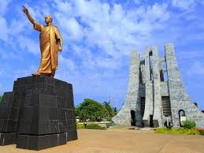

Kwame Nkrumah Memorial Park
Nkrumah Avenue, Accra Central
This park and mausoleum is the spiritual center of modern Ghana. It honors Kwame Nkrumah, Ghana's first president, visionary Pan-Africanist, and the man who led the country to independence from British colonial rule in 1957. The grounds are serene and well-kept, with a striking black and white marble mausoleum, a museum tracing Nkrumah's life, and a statue that feels like a declaration. Even if you know little about Nkrumah before you arrive, you'll leave understanding why he matters not just to Ghana, but to the entire African continent.